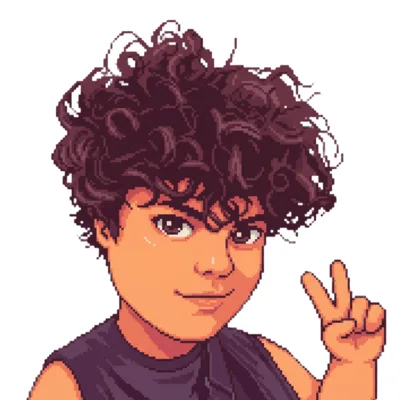
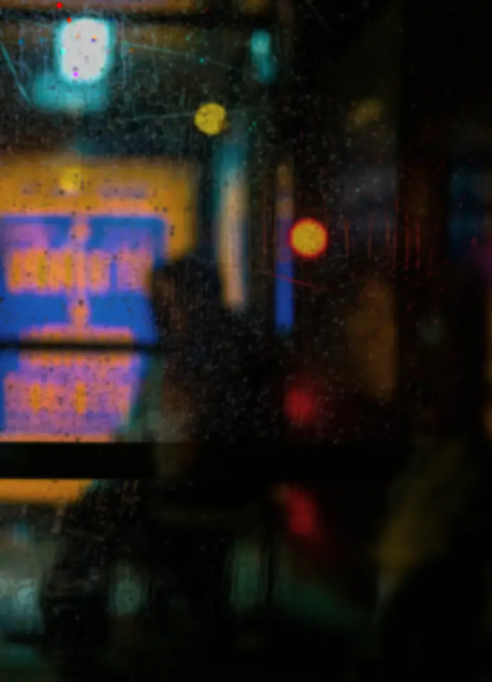

A static site generator that refuses to become a platform.
Welcome to anxidev.dev
small web home
lamp glow mode
This is my hand-built corner of the web for notes, projects, experiments, and whatever survives the late shift. No framework, no feed algorithm, no popup trying to become a relationship.
I like slow pages, old interface chrome, tiny tools, rainy backgrounds, and software that still feels like it was made by a person instead of a dashboard committee.
Quick facts
- based in Bogota, usually coding late and publishing slowly
- mostly building with JavaScript, Go, Python, and static deploys
- likes guestbooks, RSS, orange phosphor, and warm terminal windows
- email works: ax@anxiden.dev
From the logbook
full archiveProject shelf
open shelfSystems
status board
attic relay status
NOC
[ OK ] mainpage
[ OK ] mail relay
[ OK ] blog archive
[ WARM ] kettle
[ OK ] guestbook
[ OK ] photo room
Guestbook
latest sign-ins
mira@small.garden
Apr 16, 11:42 PM
Your notebook post made me take mine out again. Sites like this still feel inhabited.
anon
Apr 14, 03:17 AM
Reading this with tea and a window cracked open. Please never add a newsletter popup.
j.wolf
Apr 11, 06:02 PM
Kettle turned my terminal into the color of old oak. Very good decision.
Photo room
spring tape scans
The photo room is where I drop disposable camera scans, room details, bad weather, and proof that the site aesthetic is not just an act.
Latest batch: tram reflections, lamp corners, warm tea, window condensation, and one shelf that somehow looks different every week.
- orange light, rainy glass, desk at 2AM
- maps taped beside the monitor and notes everywhere
- the room this whole site keeps trying to imitate